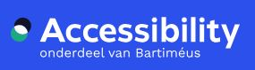

Miembros Actuales y Testimonios
Los miembros del W3C muestran su apoyo a los estándares y al W3C a través de una variedad de medios, que incluyen la participación en grupos, el patrocinio de eventos, la presidencia de grupos e implementación de especificaciones. Esta página lista testimonios de miembros que ofrecen una visión sobre la amplia gama de organizaciones que lideran el desarrollo de los Estándares Web.
Hay 338 miembros
algunos de ellos son:
- accessiBe
- accessiBe tiene como objetivo hacer que todo internet sea accesible para personas con discapacidades para el 2025. Con la ayuda de la inteligencia artificial, la noción de un internet accesible es una realidad práctica y alcanzable, y no solo un sueño lejano.
- Accessibility Foundation
- 
- La Fundación de Accesibilidad es un centro de expertos que proporciona información, investigación, evaluación web y capacitación en el campo de la accesibilidad de sitios web y aplicaciones web para empresas y gobiernos. Estamos comprometidos con el desarrollo de estándares de accesibilidad web en el W3C.
- Adobe
- Adobe revoluciona la forma en que el mundo se involucra con ideas e información, en cualquier momento, en cualquier lugar y a través de cualquier medio. Como proveedor líder de tecnologías web de primera clase, Adobe apoya activamente el desarrollo de estándares del W3C que promueven la interoperabilidad global.
- Akamai Technologies
- La misión de Akamai es hacer que las experiencias digitales sean rápidas, inteligentes y seguras. Nuestra plataforma de borde inteligente rodea todo, desde la empresa hasta la nube. Mantiene aplicaciones y experiencias más cercanas a los usuarios, y aleja los ataques y amenazas.
- AllianceBlock Nexera

- NexeraID es una plataforma de emisión y verificación de identidad soberana que capacita a las empresas para integrar de manera fluida a los usuarios en Web3 utilizando billeteras auto custodiadas o custodiadas, e integrar flujos de trabajo de cumplimiento complejos, todo mientras resguarda las identidades y activos de los usuarios.
- BarrierBreak Technologies
- La accesibilidad es fundamental para crear una sociedad inclusiva. Es imperativo alcanzar este objetivo y el W3C nos está ayudando a lograrlo en India y a nivel global. En BarrierBreak, estamos comprometidos con la accesibilidad digital y el papel que desempeña el W3C en implementarla a nivel mundial.
- Benetech
- Benetech es un orgulloso miembro del W3C, colaborando para establecer estándares que respalden la creación de soluciones inherentemente accesibles. El compromiso de Benetech con la accesibilidad digital es la piedra angular de nuestra iniciativa global Bookshare, y nuestro programa Global Certified Accessible verifica la accesibilidad EPUB para ayudar a los editores a construir libros electrónicos accesibles.
- British Broadcasting Corporation
- La BBC es la organización de radiodifusión más grande del mundo, cuya misión es enriquecer la vida de las personas con programas que informan, educan y entretienen. Es un servicio de radiodifusión pública, establecido por una Carta Real y financiado por los hogares del Reino Unido.